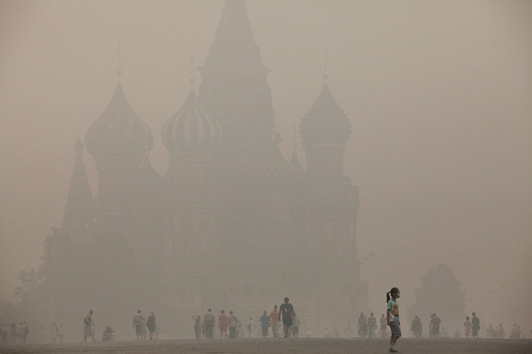

-
Reflections on the Evolution in Russia
by Greg Afinogenov August 31, 2010
This summer, Russia was in flames. A record-breaking heatwave swept over the temperate zone, turning everyone from “office plankton” to government officials into slaves of the few available air conditioners. (Moscow, like most northern cities, is singularly ill-adapted for hot weather.) Then it got worse: fires began in the peat bogs ringing the city, engulfing it in opaque, toxic smog. The heat and the accompanying drought destroyed the grain harvest in much of the country, leading to a freeze on grain exports and a potential agricultural crisis. Finally, the massive forests of central Russia caught fire, destroying military facilities and private homes alike. As I write this, the massively overstressed bureaucracy charged with mitigating the consequences of emergencies is still trying to do its job, though it is failing visibly. The result, predictably enough, is popular discontent and political scandal.
Of course, blame is directed at the usual suspects: Prime Minister Putin, President Medvedev, and the party apparatus that is supposed to be the foundation of their power. Everyone’s a critic; whether it’s the recently-passed new law on forest management, which was supposed to devolve fire-protection functions to local government and private organizations, or the bureaucratic opacity and infighting that allegedly prevents accurate information from being distributed and acted upon, or the publicity stunts that the country’s leaders appear to prefer over effective action, ultimate responsibility seems always to come from the top.
For most Western observers, and for the handful of perennially threatened liberals inside the country, this is just a confirmation of the same old story. Russia is an authoritarian nation whose leaders are corrupt and self-seeking, whose populace is passive and impotent, whose institutions are eternally in decline. Their prescriptions for the malady—which never change either—are muddled and comfortably out of reach: rarely do they go beyond nostalgia for the Yeltsin years leavened with ritualized incantations like “multiparty democracy,” “civil society,” and “the rule of law.”
Meanwhile, the country is changing.
The Intellectuals
Among the most prominent and most-discussed Russian books of the past five years are two political novels of ideas, Dmitrii Bykov’s ZhD and Zakhar Prilepin’s San’kia. In the United States, this genre has died out almost completely; in Russia, it has become a bizarre amalgam of commentary on current events, lit-scene inside jokes, and grand metaphysical theories about the country’s past and future.
This usually leaves little space for compelling plot or nuanced characterization. In San’kia, written by an avowed supporter of the National Bolshevik party (known more for their stunt demonstrations and anti-government posturing than anything the name would normally imply), the titular protagonist is a young National Bolshevik whose life revolves around party business: beating up immigrants, being beaten up by bad guys from the state security services, and expressing angsty contempt for weak-kneed liberals of all kinds. Neither the liberals nor the government have any place in Prilepin’s utopian future—that much is clear. Less clear is what that future is actually supposed to be like. Beyond some vague and watered-down fascist platitudes about the rejuvenation of the Russian people, San’kia manages never to articulate a coherent positive proposal for anything. This is not a fascist book, and the vagueness is not a cover-up for any hidden totalitarian program. Rather, it seems to be the only suitably capacious political vision available in a world which is starkly divided between two unacceptable alternatives. The rhetoric is simply an admission of defeat, a confession that the author has been unable to find an idea worth fighting for.
ZhD, although it is satirized in San’kia, is in fact not substantially different. It depicts a future in which Russia is being fought over in a civil war between Nordic fascists, whose goal is the militarization and eventual annihilation of the Russian people, and Jewish liberals, whose nefarious plans appear to involve moral corruption and the eventual annihilation of the Russian people. In the meantime, the people themselves are passive and unable to escape the circular oscillation of the country’s past. (All of Russian history, it turns out, was produced by the very same struggle.) The enemies are the same as Prilepin’s—and the ideas are equally impoverished. After nearly a thousand pages of text, Bykov cannot come up with any new vision for the future except the need for escaping the cycle. He fills the lacuna with tacky anti-Semitic tropes and pseudo-patriotic sentimentality.
Curiously enough, Bykov is himself a Jew, which suggests that the novel shares its underlying problem with San’kia: fascist vocabulary is dragged in as a palliative for an ideological vacuum that neither writer quite knows how to confront. This indecisiveness—or rather, this decisiveness emptied of all its content—forms a stark contrast with the past of the genre. Nineteenth-century political novels of ideas, like Chernyshevsky’s What Is To Be Done?, at least had a sense that they were being written for a purpose. Even Dostoevsky’s Brothers Karamazov, for all its fabled polyglossia, and Turgenev’s Fathers and Sons, for all its ironic distance, aimed to leave the reader with a sense of the landscape of ethical and political alternatives. Bykov and Prilepin leave her more confused about them than before.
In significance, Bykov and Prilepin are dwarfed by Victor Pelevin, easily the most successful and well-known Russian writer of literary fiction since the fall of the Soviet Union. (An online survey recently crowned him Russia’s leading intellectual.) Pelevin’s novels are also political, and they also deal with ideas—but they approach them from a different angle. Pelevin shuns scope and ambition; his novels, which come out every year or two, are intimately tied to their historical moment, to the headlines and scandals that fill the popular press. They also reveal the workings of a clever and educated, if somewhat impatient, mind: he is a kind of literary Zizek who quotes Derrida and Brezhnev in the same sentence and explains the Heart Sutra using the slang of Russian mafiosi.
Despite their numbers and the variety of their themes, Pelevin’s novels all have something in common. Their message, whether it’s delivered through a Ouija board by the ghost of Che Guevara or announced by a metatextual author-proxy to one of his characters, is always the same: politicians and activists are all bought and paid for, all political alternatives serve the same end, the demand for struggle and change is the naïve reflex of the uninitiated. This would sound like idle cynicism of the most unreflective kind, were it not for the metaphysical insight that always accompanies it. For Pelevin, the fundamental building block of existence is the dollar. We are, in his novels, simply machines, phantoms which lack any function or meaning other than the consumption of goods and images. The only hint at a liberatory practice is a kind of capitalist Buddhism, the recognition and self-annihilation of oneself as a consuming and consumed illusion—and since money is identical with reality, Pelevin’s novels rarely end with the world and its inhabitants ontologically undisturbed.
Somehow—and this is really the essence of his literary gift—Pelevin makes all this sound not only plausible but utterly self-evident. Although he wishes to destroy the landscape of alternatives instead of exposing it, Pelevin ends up painting a much clearer and more accurate version of it than any of his literary rivals. This is because he understands, unlike them, what has changed in Russian history in the past two decades: though its metaphysical status may be up for debate, the dollar remains the fundamental building block of Russia’s social and political life.
The People
There are a lot of cop shows on Russian television. There are, in fact, so many of them—most with stock characters and unimpressive budgets—that an uninitiated observer could be forgiven for assuming that they are part of some malevolent government program aimed at fostering support for the police state. But while it is true that Russian television is state-controlled, and nothing truly subversive would be allowed to become so incredibly popular, the reality is somewhat more complicated. From the point of view of the traditional liberal/authoritarian framework, the shows’ ideological message is ambiguous or even incomprehensible.
American cop shows and movies generally rely on a moral schema in which justice is the goal and laws and institutions are an obstacle to its realization. It is notable that this is equally at work in typically “leftist” productions like The Wire, in which the characters must manipulate or avoid the laws and institutions that perpetuate social ills, and in “rightist” ones like 24, where similar tactics are used to detect and defeat terrorist threats. Russian cop shows are very different. Justice, of course, is still the goal, and institutions are generally the enemy. What is being sought, however, is not justice in the abstract but rather justice through law. Characters who violate or bypass the law in pursuit of justice are not, as in American shows, turned into heroic protagonists: they are treated as unreliable allies at best and villains at worst.
This is, in a manner of speaking, a demand for the rule of law, though one without the traditional liberal invocation of civil and political rights. On the other hand, in a society as riven as Russia is by official lawlessness and corruption, the elevation of law-abiding police officers into cultural heroes is not especially surprising. What is surprising is that similar demands have begun to be raised in society at large. Russians are more solicitous than ever about the security of their lives and livelihoods, and they are more willing than ever to turn to institutions to protect them—even if they are increasingly reluctant to commit to broader political programs.
In short, Russians are acting, and becoming, more and more bourgeois. The explanation for this is simple. Over the course of the 2000s, due to the easy prosperity and cheap credit brought about by ballooning oil prices, the average Russian could feel herself getting wealthier at a rate no one could have imagined in the 1990s. The world around the average household, too, became visibly wealthier. Glitzy pink-concrete apartment buildings and shopping centers replaced ramshackle Soviet-era apartment blocks, and a colossal real estate bubble made many Muscovites possessors of million-dollar properties. That all this prosperity was largely illusory, and that it brought about little meaningful expansion of the economy’s real productive powers, seems to have mattered little. In Russia, the simulacrum often works just as well as the real thing—which became clear when the house of cards collapsed abruptly in late 2008 (the Russian economy was the worst affected of any country) and the cultural transformation remained.
The Russia of old was a paradise of ideologies. In the Russia of today, all ideologies are converted into their currency equivalent. When DDR memorabilia is sold on the streets of the former East Berlin, there is at least some recognition that a different ideology once existed in this space. Russians happily sell the symbols Soviet ideology to each other, but to them they no longer have an ideological meaning. “Soviet” now means simply “unpretentious, old-fashioned, conservative, domestic,” just as Romanov eagles and archaic lettering denote “European, luxurious, exclusive.” Thus a shoe store near my house bears on its sign a large hammer and sickle and promises “Fair Prices”—despite the fact that its customers are all aware that decent new shoes, never mind “fair prices,” were impossible to find in the deficit-ridden Soviet era. A recent film pits a superhero in a flying (Soviet) Volga car against a supervillain in a flying Mercedes, and the conflict is presented as a clash between human cooperation and decency and runaway capitalist competition. There is no revolutionary, political, or even economic component to their struggle, however: both of the film’s antagonistic sides, whether the creators realize it or not, are products of the same spirit of bourgeois sentimentality that animates contemporary Russian culture as a whole. Nostalgia for communism, in other words, is the ultimate sign of complete embourgeoisement—and that is, perhaps, why the handful of genuinely committed radical leftist parties looks so bizarre and lost against the cultural backdrop. The mainline Communists have learned that the time of Marx and Lenin is over, while the time of their pictures has only begun.
The State
In early August, as the fires were taking on truly catastrophic proportions, a Russian LiveJournal user groused about how his village’s fire-protection system, set up under the Soviets, was dismantled by the “democrats” and replaced with a non-working telephone. The general editor of “Ekho Moskvy,” a well-known liberal radio station, forwarded the post to Putin. The prime minister posted a comment in response:
Dear User,
Today, at the end of the working day, breathing, like all Muscovites, the smoke from the fires burning around Moscow, I was very pleased to read your evaluation of the situation with the forest fires in Central Russia. […] You are, of course, a wonderfully sincere and direct person. You’re just great. And you are, unquestionably, a gifted author. If you were to earn your living by writing, you could live, like V. I. Lenin’s favorite author—A. M. Gorky—on Capri. But even there you could not feel yourself secure. Because both in Europe and the USA natural cataclysms on the same scale are being confronted. […] Despite all the problems and difficulties, I hope that you and I will be able to get to retirement successfully.What can one say about the political condition of a country whose leader could write a comment like this? Naturally, it is not simply a question of the king deigning to speak with a peasant. It is the very tone of the reply: its awkward sarcasm, its ironic reference to Lenin, its semi-facetious suggestion of a common “getting to retirement.”
If this comment is taken to be representative of an authoritarian political system, it is a very strange system indeed. For one thing, Putin’s comment does not come from a rhetorical position of authority. It is far more Woody Allen than Stalin. While he does offer to replace the fire alarm bell, he is not assuming the mantle of the Good Tsar protecting his populace. He resembles a socially-awkward middle manager more than the belligerent and repressive dictator of a seventh of the Earth’s landmass. In the meantime, Russia’s president gives uncomfortable television interviews about the need to establish trust between the citizenry and the police and to promote the rule of law, using language that could be taken straight from the website of a liberal NGO. Putin and Medvedev, if they are dictators, have become rather half-hearted ones.
What has begun to happen in Russia over the past decade is not too far from what right-wing foreign-policy experts always assumed. The growth of a bourgeois culture, if not strictly a middle class, has led to concern for the enforcement of individual rights, a new self-assertive sense of personal dignity, and an attitude of sated complacency about the issues Russians were once supposed to embrace with all the depth of their mysterious souls. Pace the standard narrative, however, the liberals aren’t getting their piece of the pie. In fact, even the “right-wing” (i.e. liberal) parties that were once supposed to be the voices of some hypothetically emerging petite bourgeoisie have fatally compromised themselves in the eyes of the actual petite bourgeoisie by signing on with the dissident-defenders and advocates of human rights in Chechnya. The New New Russian, it is clear, doesn’t care about any of that—which explains the comparatively enthusiastic support enjoyed by “The Right Cause,” a new liberal party funded by the Kremlin itself.
The intellectuals, like the liberals, were wrong. A Kremlin that funds its own quasi-opposition and leaves the Internet un-firewalled is not the Kremlin of old, even if it still knocks off dissidents. Russia isn’t stuck on a mammoth historical pendulum that swings implacably between liberal reformism and authoritarian repression. Like France under Napoleon, it has smuggled in most of the demands of the old 1989 Revolution under the cover of political conservatism, showy piety, and the hunt for contented wealth. And ideology, in Russia and in France, has gone quietly into that good night. The intellectuals might eventually see this—but first they would have to make enough money.